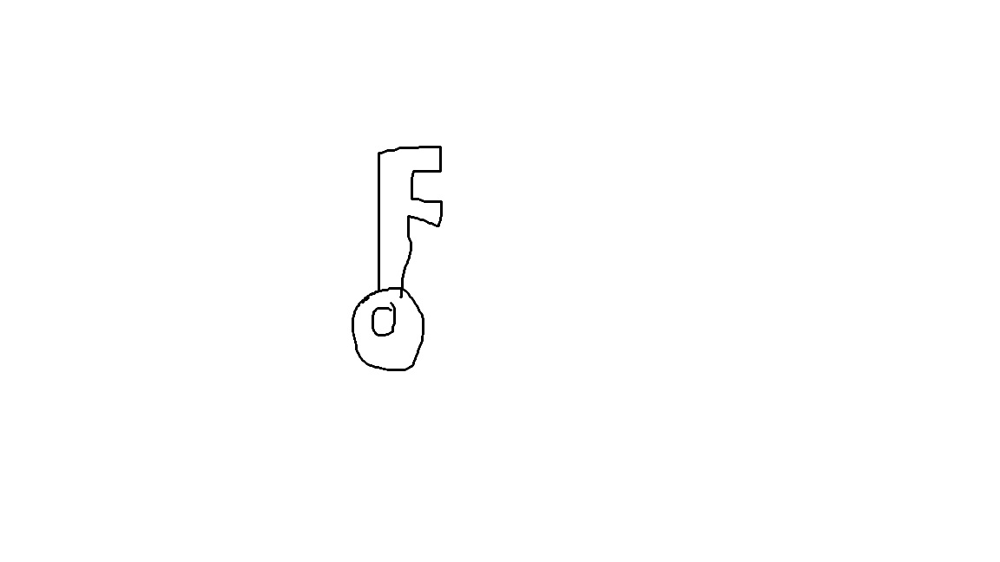
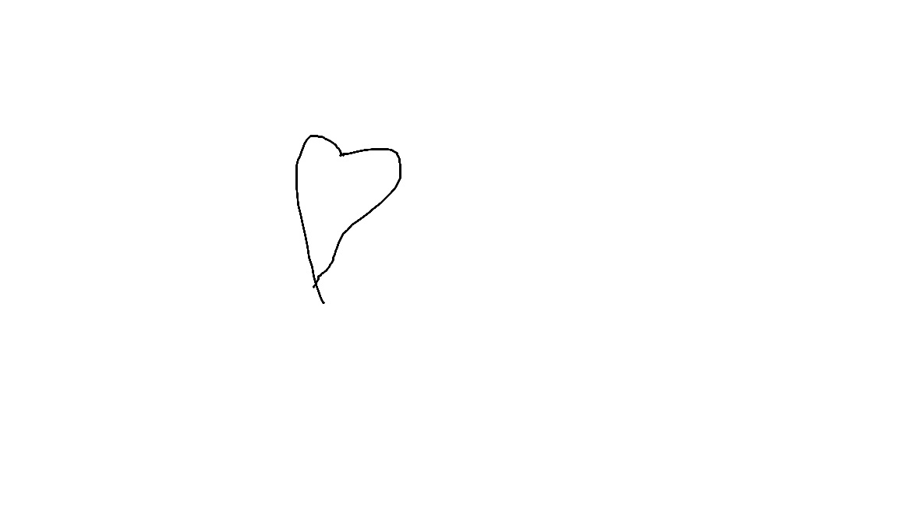
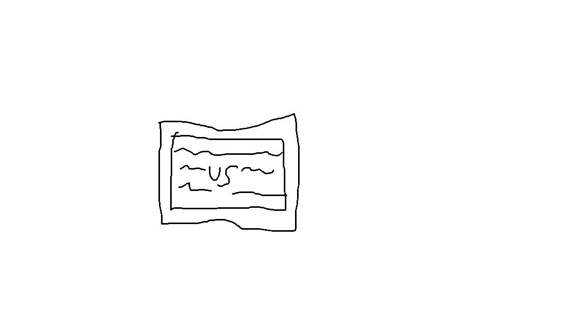

Da Astra cinema potrete trovare tantissimi film e eventi straordinari con meet&greet con attori e registi
ogni mese escono nuovi film emozionanti, avvincenti e anche divertenti pronti per ogni tua esigenza

un film fantasy adatto per adulti e bambini in cerca di un film avvincente
la storia parladi due ragazzi catapultati in un mondo fantasy, per uscire devono trovare la chiave perduta

un film tragicomico adatto se vuoi piangere eridere allo stesso tempo
giovanni e alice sono amici da quando sono bambini, il lororapporto neltempo cambia in qualcosa di piu' ma ad ostacolarli ci saranno diverse situazioni

documentario basato sulla storia dell'evoluzione umana
ci chiediamo spesso da dove deriviamo e come abbiamo fatto ad arrivare al punto in cui siamo oggi, questo vi dara' la risposta